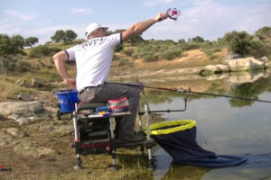

Destacados
La pesca a la inglesa,¿Cómo pescar con esta técnica?
¿En qué consiste la pesca a la inglesa y cuáles son sus orígenes? La pesca a la inglesa (también conocida como pesca a la boloñesa en otros países) comúnmente denominada …
[Continua leyendo...]¿Cómo pescar con cucharilla? Trucos y consejos de pesca que si funcionan
¿En qué consiste la pesca con cucharilla y cómo se usan? La pesca con cucharilla es una modalidad en la que se utiliza un tipo de señuelo específico para poder …
[Continua leyendo...]Lances de pesca en el surfcasting, trucos y técnicas para lanzar la caña más lejos
La importancia de lanzar nuestra caña de surfcasting de forma correcta El nombre de surfcasting viene a significar “lanzado sobre las olas”. Esta traducción indica que la parte más importante
[Continua leyendo...]¿Cómo detectar una picada en la pesca? Usa un señalizador de picadas

¿Cómo usar un avisador o indicador de picada? Es de vital importancia detectar picadas de peces a tiempo. Si no lo hacemos en el momento indicado podemos perder la captura …
[Continua leyendo...]